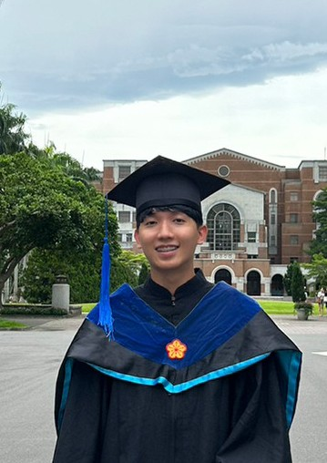

M.S. Electrical & Computer Engineering
Sep 2025 – Mar 2027
University of Washington, Seattle

Backend · Distributed Systems · Infrastructure
Looking for SWE New Grad roles starting 2027
I build backend services and the infrastructure around them, and I care most about making systems measurably faster and cheaper.
University of Washington, Seattle
National Taiwan University
National Yang Ming Chiao Tung University
Go backend services on GCP. Cut a vulnerability-reporting pipeline's BigQuery cost by 99.88% and its p99 API latency from 55s to 2.8s.
iOS and Flutter features for an AI media app with 10k+ daily active users.
LLM fine-tuning platform — QLoRA on Mistral 7B, cutting model memory ~75%.
Go · gRPC · Python · PostgreSQL · Redis · RabbitMQ · GCP · Terraform · Docker